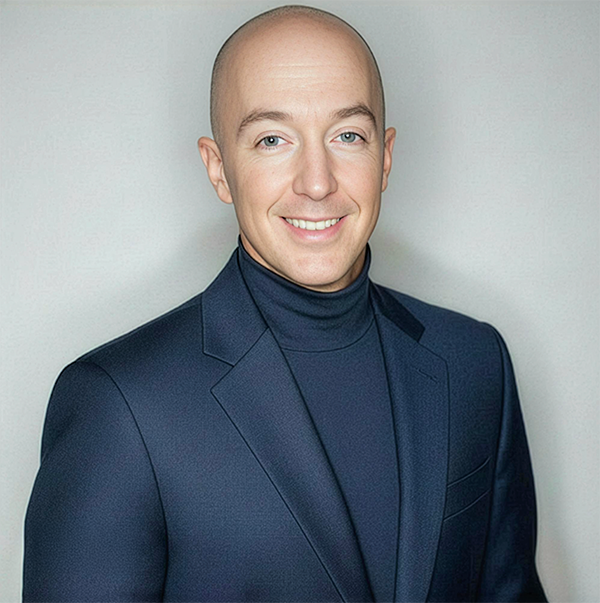

C.T. Holland is the creator of Mind Of Your Own®, an independent body of work examining how language, identity, inherited systems, social influence, technology and institutions shape what people experience as their own thinking.

For more than three decades, Holland has studied and worked with language, belief formation, persuasion, identity, rapport, questioning and conscious change. His formal background includes Advanced Investigative Interviewing with Neuro-Linguistic Programming (NLP), NLP Practitioner training at NLP University under Robert Dilts and Judith DeLozier, Ericksonian Hypnosis, Generative NLP Master Practitioner training, and Persuasion Engineering and NLP Trainer's Training under Richard Bandler and John La Valle.
That training became part of a broader intellectual lineage. Mind Of Your Own® draws from the work of Gurdjieff and P.D. Ouspensky on mechanical behavior and self-observation; Julian Jaynes on the analog self, narratization and interior mind-space; Ernest Becker on mortality, meaning and borrowed power; Joseph Campbell on myth, the hero's journey and the power of story; the NLP lineage of Bandler, Grinder, Dilts, DeLozier, Satir, Erickson and Perls; Paul Brunton on the Overself, including The Quest of the Overself and The Hidden Teaching Beyond Yoga; Robert Cialdini on persuasion and influence; and Richard Brodie on memetics.
Mind Of Your Own® brings these influences together with decades of observation, applied communication work, research and writing across psychology, philosophy, political identity, media, institutional behavior, artificial intelligence, memory, persuasion and systems of influence. Rather than asking people what they should believe, the work is designed to help them notice how beliefs are formed, reinforced, performed, defended and sometimes quietly supplied by the systems around them.
Holland's current framework includes the Five Selves — Embodied, Symbolic, Inherited, Performed and Algorithmic — as well as practical tools for detecting influence, examining language, interrupting automatic responses and separating agreement from allegiance. A central premise of the work is that influence itself is not the enemy because influence itself is unavoidable. The more useful question is whether we can become conscious of it while it is happening.
That distinction has become increasingly important as political identity, algorithmic systems and artificial intelligence take a larger role in shaping what people encounter, repeat, fear, desire and believe. Holland's work is not anti-technology and does not romanticize some untouched human mind that existed before outside influence. Instead, it focuses on authorship: the capacity to recognize what is acting on us and participate more deliberately in what happens next.
Alongside the development of Mind Of Your Own®, Holland's professional life has included long-term executive work in medical research and healthcare, as well as independent work in writing, communications, music and digital media. Those environments have repeatedly placed him inside systems where language, information, hierarchy, persuasion and decision-making matter.
A Survival Guide for Democracy — In Development
A book about authorship, influence, identity, language, institutional systems and conscious participation in an increasingly algorithmic world.
Essays & Commentary
Writing on political identity, persuasion, language, artificial intelligence, inherited belief and institutional behavior.
Live Work — In Development
Developing live formats that translate Mind Of Your Own® into practical experiences around language, influence, identity and authorship.
Outside Mind Of Your Own®, Holland is a recording artist and producer under the name NOAH®. His independent creative work also includes Full Circle Media™ and Sunolicious™. He is the founder of Fairfield and Company LLC.